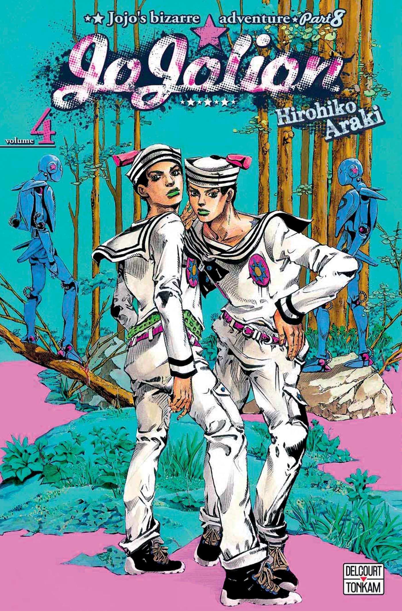
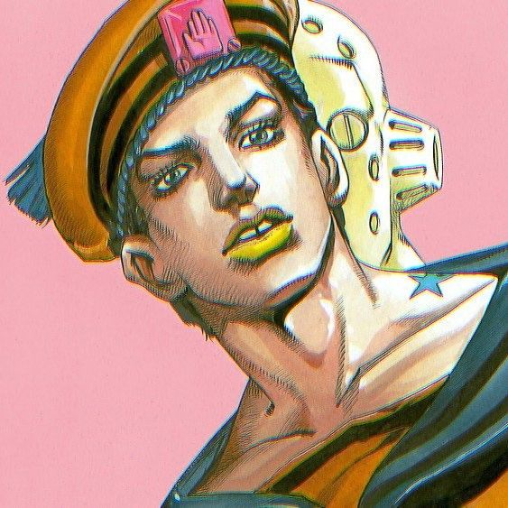

Jojo- Jojolion

| Início JOJO parte 1 JOJO parte 2 JOJO parte 3 JOJO parte 4 JOJO parte 5 JOJO parte 6 JOJO parte 7 JOJO parte 8 |


Josuke Higashikata (東方 定助 Higashikata Jōsuke) é o protagonista da oitava parte de JoJo's Bizarre Adventure, JoJolion, e o oitavo JoJo da série.
Josuke é um jovem aflito com amnésia retrógada, tendo ausência de quaisquer memórias antes de ter sido descoberto por Yasuho Hirose perto das Paredes Oculares na cidade de Morioh. Ele se dedica a descobrir sua antiga identidade e aqueles originalmente associados a ela.
Na mesma continuidade de Steel Ball Run, a Cidade-S da Prefeitura-M é devastada pelo terremoto e tsunami de Tohoku (um evento real que ocorreu em 2011). Logo após o fenômeno, estruturas estranhas conhecidas apenas pelo nome de Wall Eyes começam a surgir por toda a cidade de Morioh.
Quando um estudante da faculdade local chamado Yasuho Hirose encontra um misterioso jovem enterrado debaixo de uma das Wall Eyes, eles embarcam junto em uma grande aventura para tentar ajudar o jovem a recuperar suas memórias.